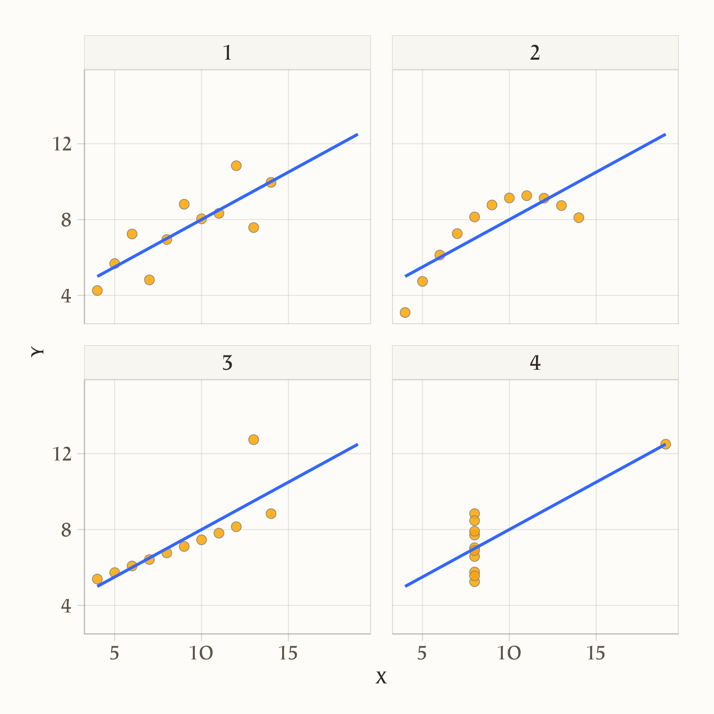

here::here("code", "_common.R") |>
source()
# Load packages
if (!requireNamespace("pacman")) install.packages("pacman")
pacman::p_load(readr)21 Relazioni tra variabili
In questo capitolo imparerai a
- comprendere e calcolare la correlazione e la covarianza;
- interpretare correttamente gli indici di correlazione e covarianza nel contesto dell’analisi dei dati.
Prerequisiti
- Leggere l’introduzione dell’articolo “The curious case of the cross-sectional correlation” (Hamaker, 2024).
Preparazione del Notebook
21.1 Introduzione
L’analisi delle associazioni tra variabili è un’operazione fondamentale nell’ambito della ricerca psicologica, ma nonostante la sua apparente semplicità, rappresenta uno degli aspetti più controversi e metodologicamente complessi. Sebbene possa sembrare un passaggio naturale successivo all’analisi univariata, questo processo solleva numerose questioni concettuali e pratiche che richiedono un’attenta riflessione.
Storicamente, in psicologia, l’analisi delle associazioni tra variabili è stata spesso considerata come l’obiettivo finale del processo di ricerca. Questa visione si basa sull’idea che la descrizione delle relazioni tra variabili possa fornire una spiegazione esaustiva dei fenomeni psicologici. Tale approccio affonda le sue radici nel pensiero di Karl Pearson (1911), il quale sosteneva che la spiegazione scientifica si esaurisse una volta delineate le associazioni tra le variabili osservate. Pearson affermava:
“Quanto spesso, quando è stato osservato un nuovo fenomeno, sentiamo che viene posta la domanda: ‘qual è la sua causa?’. Questa è una domanda a cui potrebbe essere assolutamente impossibile rispondere. Invece, può essere più facile rispondere alla domanda: ‘in che misura altri fenomeni sono associati con esso?’. Dalla risposta a questa seconda domanda possono risultare molte preziose conoscenze.”
Sebbene sia indubbio che rispondere alla domanda posta da Pearson sia relativamente semplice, è altrettanto evidente che la nostra comprensione di un fenomeno non può dipendere unicamente dalle informazioni fornite dalle correlazioni. Le associazioni, infatti, non implicano causalità e possono risultare fuorvianti se interpretate in modo superficiale.
In contrasto con questa visione tradizionale, la cosiddetta “Causal Revolution” propone un paradigma radicalmente diverso, secondo il quale le associazioni tra variabili sono considerate come epifenomeni, ovvero manifestazioni superficiali di meccanismi più profondi. L’obiettivo principale della ricerca, in questo quadro, diventa l’identificazione e la comprensione delle relazioni causali. Per comprendere veramente i fenomeni psicologici, è essenziale indagare le cause sottostanti, andando oltre la mera descrizione delle associazioni.
Un esempio emblematico è l’associazione tra il numero di scarpe e le abilità matematiche nei bambini. Questa correlazione è molto forte, ma se controlliamo per la variabile confondente “età”, l’associazione scompare. Questo dimostra che, in psicologia così come in altri campi, trovare correlazioni molto forti tra variabili non è necessariamente informativo riguardo ai meccanismi sottostanti al fenomeno studiato. È ovvio che il numero di scarpe non influisce sulle abilità matematiche, ma senza controllare per l’età, l’associazione rimane ingannevolmente forte.
Allo stesso modo, può accadere che un’associazione apparentemente forte scompaia se non si tiene conto di variabili confondenti. Consideriamo, ad esempio, la relazione tra autostima e rendimento scolastico in un campione di adolescenti. Analizzando l’intera popolazione, la correlazione tra autostima e rendimento potrebbe risultare prossima a zero. Questo apparente risultato nullo, tuttavia, potrebbe nascondere una relazione più complessa, influenzata da un fattore confondente come il supporto familiare.
- In presenza di un forte supporto familiare, una maggiore autostima potrebbe effettivamente favorire migliori risultati scolastici.
- Al contrario, in assenza di tale supporto, anche livelli elevati di autostima potrebbero non tradursi in un rendimento scolastico migliore, a causa di risorse emotive e pratiche limitate.
Quando si controlla per il supporto familiare (ad esempio analizzando separatamente i gruppi con alto e basso sostegno), emerge una relazione positiva credibile tra autostima e rendimento scolastico all’interno del gruppo con supporto elevato. Questo esempio mostra come, a livello aggregato, l’effetto di due variabili possa apparire nullo, mentre il controllo per un confondente svela una relazione causale rilevante.
In conclusione, l’analisi delle associazioni rappresenta un punto di partenza fondamentale, ma non può sostituire l’indagine delle relazioni causali. Per progredire nella comprensione dei fenomeni psicologici, è necessario integrare l’analisi dei dati con modelli teorici robusti e un approccio critico volto a identificare e controllare i fattori confondenti. Solo così possiamo passare dalla semplice descrizione delle relazioni alla vera comprensione dei meccanismi causali che le governano.
21.2 Terminologia
La discussione dei metodi utilizzati per individuare le relazioni causali sarà trattata successivamente. In questo capitolo, ci concentreremo sui concetti statistici fondamentali necessari per descrivere le associazioni lineari tra variabili. È importante sottolineare che, sebbene esistano indici statistici per quantificare associazioni non lineari, la maggior parte degli psicologi si limita all’utilizzo di indici lineari.
Nel linguaggio comune, termini come “dipendenza”, “associazione” e “correlazione” vengono spesso usati in modo intercambiabile. Tuttavia, da un punto di vista tecnico, è importante distinguere questi concetti:
- Associazione: questo termine indica una relazione generale tra variabili, dove la conoscenza del valore di una variabile fornisce informazioni su un’altra.
- Correlazione: descrive una relazione specifica e quantificabile, indicando se due variabili tendono a variare insieme in modo sistematico. Ad esempio, in una correlazione positiva, se \(X > \mu_X\), è probabile che anche \(Y > \mu_Y\). La correlazione specifica il segno e l’intensità di una relazione lineare.
- Dipendenza: indica una relazione causale tra le variabili, dove la variazione della variabile causale porta probabilisticamente alla variazione della variabile dipendente.
È cruciale comprendere che non tutte le associazioni sono correlazioni e, soprattutto, che la correlazione non implica necessariamente causalità. Questa distinzione è fondamentale per interpretare correttamente i dati e evitare conclusioni errate sulle relazioni tra variabili.
In questo capitolo, esamineremo due misure statistiche fondamentali per valutare la relazione lineare tra due variabili: la covarianza e la correlazione. Questi indici ci permettono di descrivere il grado e la direzione dell’associazione lineare tra variabili, quantificando come queste variano congiuntamente.
21.3 Analisi della Relazione tra Due Misure della Depressione
L’obiettivo di questo esempio è esaminare la relazione tra due scale psicometriche che misurano la depressione: il Beck Depression Inventory II (BDI-II) e la Center for Epidemiologic Studies Depression Scale (CES-D). Lo studio di Zetsche et al. (2019) ha indagato se le aspettative negative possano costituire un meccanismo centrale nel mantenimento e nella reiterazione della depressione. In particolare, i ricercatori hanno confrontato 30 soggetti con almeno un episodio depressivo maggiore e 37 individui senza diagnosi depressiva.
21.3.1 Strumenti di Misurazione
BDI-II:
Strumento di autovalutazione che misura l’intensità dei sintomi depressivi riscontrati nelle ultime due settimane. Composto da 21 item, ciascuno valutato su una scala da 0 a 3, fornisce una stima della gravità della depressione.CES-D:
Scala anch’essa di autovalutazione, progettata per quantificare i sintomi depressivi sperimentati nella settimana precedente, principalmente in popolazioni generali, con particolare attenzione ad adolescenti e giovani adulti.
Poiché entrambi gli strumenti mirano a misurare lo stesso costrutto, è ragionevole aspettarsi una relazione lineare tra i punteggi ottenuti, pur riconoscendo che errori di misurazione e unità di misura diverse possono generare discrepanze.
21.3.2 Analisi Statistica e Visualizzazione
Per verificare la relazione tra i punteggi BDI-II e CES-D, i dati sono stati processati come segue:
# Leggi i dati dal file CSV
df <- rio::import(here::here("data", "data.mood.csv"))
# Seleziona le colonne di interesse
df <- df |>
dplyr::select("esm_id", "group", "bdi", "cesd_sum")
# Rimuovi righe duplicate e casi con valori mancanti in 'bdi'
df <- df[!duplicated(df), ]
df <- df[!is.na(df$bdi), ]Successivamente, è stato realizzato un grafico a dispersione (scatterplot) in cui i valori del BDI-II sono stati posti sull’asse delle ascisse e quelli del CES-D sull’asse delle ordinate. Ogni punto rappresenta un partecipante, suddiviso per gruppo (soggetti depressi e controlli). L’aggiunta di una retta di regressione, ottenuta mediante un modello lineare, consente di valutare visivamente la tendenza di associazione tra le due misure.
# Separazione dei dati per gruppo
mdd_data <- df[df$group == "mdd", ]
ctl_data <- df[df$group == "ctl", ]
# Calcolo dei coefficienti di regressione lineare
coeff_combined <- lm(cesd_sum ~ bdi, data = df)$coefficients
# Funzione per la retta di regressione
line_combined <- function(x) coeff_combined[1] + coeff_combined[2] * x
# Generazione dei valori x per la retta
x_values <- seq(min(df$bdi), max(df$bdi), length.out = 100)
okabe_ito_colors <- c("Pazienti" = "#E69F00", # Arancione
"Controlli" = "#56B4E9") # Azzurro
# Creazione del grafico a dispersione e della retta di regressione
ggplot() +
geom_point(
data = mdd_data,
aes(x = bdi, y = cesd_sum, color = "Pazienti"), alpha = 0.7
) +
geom_point(
data = ctl_data,
aes(x = bdi, y = cesd_sum, color = "Controlli"), alpha = 0.7
) +
geom_line(
aes(x = x_values, y = line_combined(x_values)),
linetype = "dashed", color = okabe_ito_colors["Pazienti"]
) +
geom_vline(
aes(xintercept = mean(mdd_data$bdi, na.rm = TRUE)),
color = okabe_ito_colors["Pazienti"], alpha = 0.2
) +
geom_vline(
aes(xintercept = mean(ctl_data$bdi, na.rm = TRUE)),
color = okabe_ito_colors["Controlli"], alpha = 0.2
) +
geom_hline(
aes(yintercept = mean(mdd_data$cesd_sum, na.rm = TRUE)),
color = okabe_ito_colors["Pazienti"], alpha = 0.2
) +
geom_hline(
aes(yintercept = mean(ctl_data$cesd_sum, na.rm = TRUE)),
color = okabe_ito_colors["Controlli"], alpha = 0.2
) +
labs(x = "BDI-II", y = "CES-D", color = "Gruppo") +
scale_color_manual(
values = okabe_ito_colors
)
21.3.3 Interpretazione dei Risultati
Il grafico a dispersione evidenzia una tendenza approssimativamente lineare tra i punteggi del BDI-II e della CES-D, indicando che, in linea teorica, le due scale sono associate nel misurare il livello di depressione. Tuttavia, la presenza di una certa dispersione dei dati rispetto alla retta ideale sottolinea l’influenza degli errori di misurazione e della natura arbitraria delle unità di misura utilizzate. Per una valutazione più accurata della relazione, è necessario ricorrere a indici statistici in grado di quantificare sia la forza che la direzione dell’associazione.
21.4 Covarianza
Iniziamo a considerare il più importante di tali indici, chiamato covarianza. In realtà la definizione di questo indice non ci sorprenderà più di tanto in quanto, in una forma solo apparentemente diversa, l’abbiamo già incontrata in precedenza. Ci ricordiamo infatti che la varianza di una generica variabile \(X\) è definita come la media degli scarti quadratici di ciascuna osservazione dalla media:
\[ S_{XX} = \frac{1}{n} \sum_{i=1}^n(X_i - \bar{X}) (X_i - \bar{X}). \]
La varianza viene talvolta descritta come la “covarianza di una variabile con sé stessa”. Adesso facciamo un passo ulteriore. Invece di valutare la dispersione di una sola variabile, ci chiediamo come due variabili \(X\) e \(Y\) “variano insieme” (co-variano). È facile capire come una risposta a tale domanda possa essere fornita da una semplice trasformazione della formula precedente che diventa:
\[ S_{XY} = \frac{1}{n} \sum_{i=1}^n(X_i - \bar{X}) (Y_i - \bar{Y}). \tag{21.1}\]
L’Equazione 21.1 ci fornisce la definizione della covarianza.
21.4.1 Interpretazione
Per capire il significato dell’Equazione 21.1, supponiamo di dividere il grafico riportato nella ?sec-scatter-plot in quattro quadranti definiti da una retta verticale passante per la media dei valori BDI-II e da una retta orizzontale passante per la media dei valori CES-D. Numeriamo i quadranti partendo da quello in basso a sinistra e muovendoci in senso antiorario.
Se prevalgono punti nel I e III quadrante, allora la nuvola di punti avrà un andamento crescente (per cui a valori bassi di \(X\) tendono ad associarsi valori bassi di \(Y\) e a valori elevati di \(X\) tendono ad associarsi valori elevati di \(Y\)) e la covarianza avrà segno positivo. Mentre se prevalgono punti nel II e IV quadrante la nuvola di punti avrà un andamento decrescente (per cui a valori bassi di \(X\) tendono ad associarsi valori elevati di \(Y\) e a valori elevati di \(X\) tendono ad associarsi valori bassi di \(Y\)) e la covarianza avrà segno negativo. Dunque, il segno della covarianza ci informa sulla direzione della relazione lineare tra due variabili: l’associazione lineare si dice positiva se la covarianza è positiva, negativa se la covarianza è negativa.
Esempio 21.1 Implementiamo l’Equazione 21.1 in R.
Per i dati mostrati nel diagramma, la covarianza tra BDI-II e CESD è 207.4
x <- df$bdi
y <- df$cesd_sum
cov_value(x, y)
#> [1] 207.4Oppure, in maniera più semplice:
Lo stesso risultato si ottiene con la funzione cov:
La funzione cov(x, y) calcola la covarianza tra due array, x e y utilizzando \(n-1\) al denominatore.
21.5 Correlazione
La direzione della relazione tra le variabili è indicata dal segno della covarianza, ma il valore assoluto di questo indice non fornisce informazioni utili poiché dipende dall’unità di misura delle variabili. Ad esempio, considerando l’altezza e il peso delle persone, la covarianza sarà più grande se l’altezza è misurata in millimetri e il peso in grammi, rispetto al caso in cui l’altezza è in metri e il peso in chilogrammi. Pertanto, per descrivere la forza e la direzione della relazione lineare tra due variabili in modo adimensionale, si utilizza l’indice di correlazione.
La correlazione è ottenuta standardizzando la covarianza tramite la divisione delle deviazioni standard (\(s_X\), \(s_Y\)) delle due variabili:
\[ r = \frac{S_{XY}}{S_X S_Y}. \tag{21.2}\]
La quantità che si ottiene dall’Equazione 21.2 viene chiamata correlazione di Bravais-Pearson (dal nome degli autori che, indipendentemente l’uno dall’altro, l’hanno introdotta).
In maniera equivalente, per una lista di coppie di valori \((x_1, y_1), \dots, (x_n, y_n)\), il coefficiente di correlazione è definito come la media del prodotto dei valori standardizzati:
\[ r = \frac{1}{n} \sum_{i=1}^{n} \left( \frac{x_i - \bar{x}}{\sigma_x} \right) \left( \frac{y_i - \bar{y}}{\sigma_y} \right), \tag{21.3}\]
dove \(\bar{x}\) e \(\bar{y}\) rappresentano, rispettivamente, le medie dei valori \(x\) e \(y\), e \(\sigma_x\) e \(\sigma_y\) sono le rispettive deviazioni standard.
Nell’Equazione 21.3, i valori \(x_i\) e \(y_i\) vengono prima standardizzati sottraendo la media e dividendo per la deviazione standard, e poi si calcola la media del prodotto di questi valori standardizzati.
21.5.1 Proprietà
Il coefficiente di correlazione ha le seguenti proprietà:
- ha lo stesso segno della covarianza, dato che si ottiene dividendo la covarianza per due numeri positivi;
- è un numero puro, cioè non dipende dall’unità di misura delle variabili;
- assume valori compresi tra -1 e +1.
21.5.2 Interpretazione
All’indice di correlazione possiamo assegnare la seguente interpretazione:
- \(r_{XY} = -1\) \(\rightarrow\) perfetta relazione negativa: tutti i punti si trovano esattamente su una retta con pendenza negativa (dal quadrante in alto a sinistra al quadrante in basso a destra);
- \(r_{XY} = +1\) \(\rightarrow\) perfetta relazione positiva: tutti i punti si trovano esattamente su una retta con pendenza positiva (dal quadrante in basso a sinistra al quadrante in alto a destra);
- \(-1 < r_{XY} < +1\) \(\rightarrow\) presenza di una relazione lineare di intensità diversa;
- \(r_{XY} = 0\) \(\rightarrow\) assenza di relazione lineare tra \(X\) e \(Y\).
Esempio 21.2 Per i dati riportati nel diagramma della Sezione 21.3.2, la covarianza è 207.4. Il segno positivo della covarianza ci dice che tra le due variabili c’è un’associazione lineare positiva. Per capire quale sia l’intensità della relazione lineare calcoliamo la correlazione. Essendo le deviazioni standard del BDI-II e del CES-D rispettavamente uguali a 15.37 e 14.93, la correlazione diventa uguale a \(\frac{207.426}{15.38 \cdot 14.93} = 0.904.\) Tale valore è prossimo a 1.0, il che vuol dire che i punti del diagramma a dispersione non si discostano troppo da una retta con una pendenza positiva.
Troviamo la correlazione con la funzione corrcoef():
cor(x, y)
#> [1] 0.9041Replichiamo il risultato implementando l’Equazione 21.2:
Un altro modo ancora per trovare la correlazione tra i punteggi BDI-II e CESD è quello di applicare l’Equazione 21.3:
Esempio 21.3 Un uso interessante delle correlazioni viene fatto in un recente articolo di Guilbeault et al. (2024). Il concetto di “gender bias” si riferisce alla tendenza sistematica di favorire un sesso rispetto all’altro, spesso a scapito delle donne. Lo studio di Guilbeault et al. (2024) analizza come le immagini online influenzino la diffusione su vasta scala di questo preconcetto di genere.
Attraverso un vasto insieme di immagini e testi raccolti online, gli autori dimostrano che sia le misurazioni basate sulle immagini che quelle basate sui testi catturano la frequenza con cui varie categorie sociali sono associate a rappresentazioni di genere, valutate su una scala da -1 (femminile) a 1 (maschile), con 0 che indica una neutralità di genere. Questo consente di quantificare il preconcetto di genere come una forma di bias statistico lungo tre dimensioni: la tendenza delle categorie sociali ad associarsi a un genere specifico nelle immagini e nei testi, la rappresentazione relativa delle donne rispetto agli uomini in tutte le categorie sociali nelle immagini e nei testi, e il confronto tra le associazioni di genere nei dati delle immagini e dei testi con la distribuzione empirica delle donne e degli uomini nella società. Il lavoro di Guilbeault et al. (2024) evidenzia che il preconcetto di genere è molto più evidente nelle immagini rispetto ai testi, come mostrato nel pannello C della figura.
Si noti che, nel grafico del pannello C della figura, ogni punto può essere interpretato come una misura di correlazione. La misura utilizzata da Guilbeault et al. (2024) riflette il grado di associazione tra le categorie sociali e le rappresentazioni di genere presenti nelle immagini e nei testi analizzati. Quando la misura è vicina a +1, indica una forte associazione positiva tra una categoria sociale specifica e una rappresentazione di genere maschile, mentre un valore vicino a -1 indica una forte associazione negativa con una rappresentazione di genere femminile. Un valore di 0, invece, suggerisce che non vi è alcuna associazione tra la categoria sociale considerata e un genere specifico, indicando una sorta di neutralità di genere. In sostanza, questa misura di frequenza può essere interpretata come una correlazione che riflette la tendenza delle categorie sociali a essere rappresentate in un modo o nell’altro nelle immagini e nei testi analizzati, rispetto ai concetti di genere femminile e maschile.

21.6 Correlazione di Spearman
Un’alternativa per valutare la relazione lineare tra due variabili è il coefficiente di correlazione di Spearman, che si basa esclusivamente sull’ordine dei dati e non sugli specifici valori. Questo indice di associazione è particolarmente adatto quando gli psicologi sono in grado di misurare solo le relazioni di ordine tra diverse modalità di risposta dei soggetti, ma non l’intensità della risposta stessa. Tali variabili psicologiche che presentano questa caratteristica sono definite come “ordinali”.
È importante ricordare che, nel caso di una variabile ordinale, non è possibile utilizzare le statistiche descrittive convenzionali come la media e la varianza per sintetizzare le osservazioni. Tuttavia, è possibile riassumere le osservazioni attraverso una distribuzione di frequenze delle diverse modalità di risposta. Come abbiamo appena visto, la direzione e l’intensità dell’associazione tra due variabili ordinali possono essere descritte utilizzando il coefficiente di correlazione di Spearman.
Per fornire un esempio, consideriamo due variabili di scala ordinale e calcoliamo la correlazione di Spearman tra di esse.
21.7 Oltre la correlazione e la covarianza: quando l’associazione tra variabili è più complessa
In questo capitolo abbiamo introdotto due misure fondamentali per descrivere la relazione tra due variabili: covarianza e correlazione. La covarianza fornisce un’indicazione del modo in cui due variabili si discostano congiuntamente dalle proprie medie, mentre la correlazione ne standardizza i valori, permettendo un confronto più immediato tra diverse coppie di variabili e garantendo un indice compreso tra -1 e +1. Una correlazione vicina a +1 indica una forte relazione lineare positiva, vicina a -1 una forte relazione lineare negativa, mentre un valore vicino a 0 segnala l’assenza di una chiara relazione lineare.
Tuttavia, è cruciale comprendere che la correlazione descrive esclusivamente la dimensione lineare della relazione tra due variabili. Questo significa che una correlazione nulla (pari a zero) non implica affatto che non vi sia alcuna relazione tra le variabili, ma semplicemente che non esiste una relazione lineare. Possono esistere relazioni non lineari anche molto forti, non catturate da questo indice. Inoltre, altre situazioni possono trarre in inganno, come nei casi in cui i dati siano raggruppati in sottogruppi con proprietà differenti o siano frutto di particolari processi di selezione.
21.7.1 Correlazione nulla e relazioni non lineari
Una correlazione pari a zero può nascondere relazioni non lineari anche molto marcate. Per esempio, se una variabile Y aumenta solo quando X è molto alta o molto bassa, ma rimane costante per valori intermedi di X, questa curva a “U” può generare una correlazione vicina allo zero, pur esistendo un forte legame non lineare.
Un esempio illustrativo è fornito dal cosiddetto Datasaurus Dozen, un insieme di tredici dataset con la stessa media, deviazione standard e correlazione tra le variabili, ma con distribuzioni visivamente e strutturalmente molto diverse. In ognuno di questi dataset la correlazione di Pearson è pari a zero, ma l’ispezione grafica rivela pattern e forme ben definite. Questo ci ricorda che è sempre bene accompagnare le misure numeriche con una visualizzazione grafica dei dati.
datasaurus_data <- read.csv("../../data/datasaurus.csv")
datasaurus_summary <- datasaurus_data %>%
group_by(dataset) %>%
summarise(
x_count = n(),
x_mean = mean(x, na.rm = TRUE),
x_std = sd(x, na.rm = TRUE),
y_count = n(),
y_mean = mean(y, na.rm = TRUE),
y_std = sd(y, na.rm = TRUE)
)
datasaurus_summary
#> # A tibble: 13 × 7
#> dataset x_count x_mean x_std y_count y_mean y_std
#> <chr> <int> <dbl> <dbl> <int> <dbl> <dbl>
#> 1 away 142 54.3 16.8 142 47.8 26.9
#> 2 bullseye 142 54.3 16.8 142 47.8 26.9
#> 3 circle 142 54.3 16.8 142 47.8 26.9
#> 4 dino 142 54.3 16.8 142 47.8 26.9
#> 5 dots 142 54.3 16.8 142 47.8 26.9
#> 6 h_lines 142 54.3 16.8 142 47.8 26.9
#> 7 high_lines 142 54.3 16.8 142 47.8 26.9
#> 8 slant_down 142 54.3 16.8 142 47.8 26.9
#> 9 slant_up 142 54.3 16.8 142 47.8 26.9
#> 10 star 142 54.3 16.8 142 47.8 26.9
#> 11 v_lines 142 54.3 16.8 142 47.8 26.9
#> 12 wide_lines 142 54.3 16.8 142 47.8 26.9
#> 13 x_shape 142 54.3 16.8 142 47.8 26.9datasaurus_data |>
ggplot(aes(x = x, y = y)) +
geom_point(alpha = 0.7) +
facet_wrap(~dataset, nrow = 4, ncol = 4) +
labs(x = NULL, y = NULL)
Tutti questi esempi rafforzano l’idea che l’assenza di correlazione lineare non significa assenza di relazione: potremmo avere strutture curve, pattern complessi o punti anomali (outlier) capaci di modificare radicalmente la forma della relazione tra le variabili.
Oltre alle relazioni non lineari, esistono situazioni in cui la correlazione, da sola, può fornire un’immagine distorta dei dati. Tra queste ricordiamo due fenomeni noti come il paradosso di Simpson e il paradosso di Berkson.
21.7.2 Paradosso di Simpson
Il paradosso di Simpson si verifica quando, guardando i dati raggruppati per sottogruppi, si osserva una certa relazione tra due variabili, ma aggregando i dati di tutti i sottogruppi insieme emerge una relazione opposta. In altre parole, la tendenza che appare quando si considerano i dati divisi per gruppi scompare o si inverte quando si esamina l’intero campione senza tenere conto della suddivisione in sottogruppi.
Immaginiamo di avere due dipartimenti universitari, A e B. All’interno di ciascun dipartimento, la relazione tra il voto di laurea (X) e la performance in un successivo programma di specializzazione (Y) è positiva: all’aumentare del voto di laurea aumenta, in media, la performance nella scuola di specializzazione.
Tuttavia, supponiamo che il Dipartimento A abbia in generale voti di laurea mediamente più bassi, ma ottime performance nella specializzazione; mentre il Dipartimento B abbia voti di laurea mediamente più alti, ma performance alla specializzazione un po’ più basse. Se uniamo tutti gli studenti dei due dipartimenti senza considerarne l’appartenenza, potremmo osservare una relazione negativa tra voto di laurea e performance, sovvertendo le conclusioni tratte guardando ai singoli sottogruppi.
Ecco come possiamo simulare questi dati in R:
set.seed(123)
# Numero di osservazioni per dipartimento
n <- 100
# Dipartimento A:
# Voti di laurea (X) più bassi, ma performance (Y) più alta.
# Creiamo un legame positivo tra X e Y all'interno di A.
X_A <- rnorm(n, mean = 50, sd = 5) # Voti laurea mediamente più bassi
Y_A <- X_A + rnorm(n, mean = 20, sd = 5) # Performance alta e correlata positivamente con X
# Dipartimento B:
# Voti di laurea (X) più alti, ma performance (Y) più bassa.
# Anche qui creiamo un legame positivo tra X e Y all'interno di B,
# ma con un offset tale che globalmente i voti alti coincidano con performance minori.
X_B <- rnorm(n, mean = 60, sd = 5) # Voti laurea mediamente più alti
Y_B <- X_B - rnorm(n, mean = 10, sd = 5) # Performance più bassa ma comunque correlata positivamente con X all’interno di B
# Creiamo un dataframe con tutti i dati
dipartimento <- c(rep("A", n), rep("B", n))
X <- c(X_A, X_B)
Y <- c(Y_A, Y_B)
dati <- data.frame(dipartimento, X, Y)
# Correlazioni all'interno dei dipartimenti
cat("Correlazione nel Dipartimento A:", cor(X_A, Y_A), "\n")
#> Correlazione nel Dipartimento A: 0.6671
cat("Correlazione nel Dipartimento B:", cor(X_B, Y_B), "\n")
#> Correlazione nel Dipartimento B: 0.6926
# Correlazione sull'intero dataset (senza distinguere i dipartimenti)
cat("Correlazione globale:", cor(X, Y), "\n")
#> Correlazione globale: -0.3353# Visualizziamo i dati
ggplot(dati, aes(x = X, y = Y, color = dipartimento)) +
geom_point() +
geom_smooth(method = "lm", se = FALSE) +
scale_fill_okabeito() +
labs(
title = "Paradosso di Simpson",
x = "Voto di laurea",
y = "Performance nella specializzazione",
color = "Dipartimento"
)
All’interno del Dipartimento A: la correlazione tra voto di laurea (X) e performance (Y) è positiva. Ciò significa che, per gli studenti di A, avere un voto di laurea più alto è associato a una performance maggiore nella specializzazione.
All’interno del Dipartimento B: la correlazione tra X e Y è anch’essa positiva, indicando che anche nel secondo dipartimento voti più alti tendono ad accompagnarsi a performance più alte.
Considerando entrambi i dipartimenti insieme: a causa delle differenze nei livelli medi di X e Y tra i dipartimenti, unendo i dati senza distinguere il gruppo di appartenenza otteniamo una correlazione globale negativa. Questo significa che, ignorando la suddivisione in dipartimenti, sembra che aumentare il voto di laurea sia associato a una diminuzione della performance nella specializzazione — una conclusione opposta a quella tratta dall’analisi separata dei due sottogruppi.
Questo è un esempio concreto del paradosso di Simpson: la relazione osservata in sottogruppi omogenei si inverte quando si aggregano i dati, mettendo in guardia sulla necessità di considerare con attenzione la struttura dei dati e i fattori confondenti prima di trarre conclusioni.
21.7.3 Paradosso di Berkson
Il paradosso di Berkson è un fenomeno legato alla selezione del campione. Se il dataset non è rappresentativo della popolazione generale, la relazione osservata può risultare artificiale o opposta a quella esistente su un campione più ampio. Per esempio, analizzando solo ciclisti professionisti, potremmo non vedere alcuna relazione tra VO2 max e probabilità di vincere una gara, poiché tutti hanno già superato una certa soglia di VO2 max. Considerando la popolazione generale, invece, potrebbe emergere chiaramente una relazione positiva tra questi due fattori. Questo paradosso evidenzia l’importanza di considerare il processo di selezione dei dati e di chiedersi se il campione analizzato sia adeguato a rispondere alla domanda di ricerca.
21.7.4 Limiti delle statistiche riassuntive semplici
Un esempio particolarmente famoso che dimostra i limiti delle semplici statistiche descrittive — come media, deviazione standard e correlazione — è il quartetto di Anscombe. Questo insieme di quattro piccoli dataset possiede identiche medie, varianze e correlazioni tra variabili, ma rappresenta relazioni estremamente differenti tra X e Y (Anscombe, 1973).
Importiamo il dataset anscombe già disponibile nel pacchetto datasets di R:
Il dataset anscombe contiene quattro serie di dati (x1, y1), (x2, y2), (x3, y3) e (x4, y4), ognuna costituita da 11 coppie di valori (x, y). Per comprendere meglio le loro caratteristiche, iniziamo calcolando alcune statistiche descrittive. La funzione apply() consente di applicare una funzione (ad esempio, mean) a tutte le colonne di un data frame. Usandola sulle colonne di anscombe, otteniamo le medie di ciascuna delle otto variabili (le quattro x e le quattro y):
apply(anscombe, MARGIN = 2, mean)
#> x1 x2 x3 x4 y1 y2 y3 y4
#> 9.000 9.000 9.000 9.000 7.501 7.501 7.500 7.501Osserviamo che le medie delle quattro variabili x sono identiche fino a sei cifre decimali, e le medie delle quattro variabili y differiscono solo in modo trascurabile (circa lo 0.01%). Analogamente, se calcoliamo le deviazioni standard per ciascuna variabile, notiamo una notevole somiglianza:
apply(anscombe, MARGIN = 2, sd)
#> x1 x2 x3 x4 y1 y2 y3 y4
#> 3.317 3.317 3.317 3.317 2.032 2.032 2.030 2.031Anche in questo caso, le deviazioni standard per le x coincidono fino alla sesta cifra decimale, mentre quelle delle y differiscono di meno dello 0.06%. Inoltre, se calcoliamo i coefficienti di correlazione tra x e y in ognuno dei quattro dataset, scopriamo che sono quasi identici:
# Calcoliamo la correlazione per ciascuna coppia (x1,y1), (x2,y2), (x3,y3), (x4,y4)
for (i in 1:4) {
x_var <- anscombe[[paste0("x", i)]]
y_var <- anscombe[[paste0("y", i)]]
corr_value <- cor(x_var, y_var)
cat("Correlazione tra x", i, "e y", i, ":", corr_value, "\n")
}
#> Correlazione tra x 1 e y 1 : 0.8164
#> Correlazione tra x 2 e y 2 : 0.8162
#> Correlazione tra x 3 e y 3 : 0.8163
#> Correlazione tra x 4 e y 4 : 0.8165Se ci limitassimo a guardare queste statistiche (media, deviazione standard, correlazione), potremmo facilmente essere indotti a concludere che i quattro dataset sono tra loro sostanzialmente indistinguibili. Tuttavia, la realtà è molto diversa. Le statistiche descrittive, prese da sole, non offrono una visione completa e possono nascondere importanti differenze nella struttura dei dati.
Questa differenza diventa evidente non appena decidiamo di visualizzare i dati. La rappresentazione grafica fornisce informazioni che non emergono dalle sole statistiche riassuntive:
anscombe_m <- tibble()
for (i in 1:4) {
anscombe_m <- rbind(
anscombe_m, tibble(set = i, x = anscombe[, i], y = anscombe[, i + 4])
)
}
ggplot(anscombe_m, aes(x, y)) +
geom_point(size = 3, color = "red", fill = "orange", shape = 21) +
geom_smooth(method = "lm", fill = NA, fullrange = TRUE) +
facet_wrap(~set, ncol = 2)
Osservando i grafici, notiamo subito che i quattro dataset sono profondamente diversi:
- Dataset 1: Qui la relazione tra x e y è approssimativamente lineare, e la correlazione riflette in modo appropriato il legame tra le due variabili.
- Dataset 2: Sebbene la correlazione sia simile a quella del Dataset 1, i dati mostrano una relazione curvilinea e non lineare. La semplice correlazione lineare non ne cattura la forma.
- Dataset 3: La presenza di un singolo outlier distorce la percezione della relazione tra le variabili, altrimenti lineare. La correlazione alta è influenzata in modo sproporzionato da questo punto anomalo.
- Dataset 4: Qui i dati non mostrano alcuna relazione lineare. La correlazione elevata è il frutto di un pattern fortemente atipico (ad esempio, una sola coppia di punti allineata).
Il quartetto di Anscombe mette in luce un principio fondamentale: statistiche descrittive come media, deviazione standard e correlazione non sono sempre sufficienti per comprendere la natura dei dati. La visualizzazione grafica è essenziale per cogliere relazioni, pattern non lineari, outlier e altre caratteristiche che le semplici statistiche non riescono a rivelare. In definitiva, questo esempio dimostra che analizzare i dati soltanto attraverso poche statistiche di sintesi può portare a conclusioni fuorvianti, mentre l’integrazione con la rappresentazione grafica fornisce una visione più completa e accurata.
21.8 Riflessioni Conclusive
La covarianza e la correlazione sono strumenti preziosi per capire l’intensità e la direzione lineare di una relazione tra due variabili. Tuttavia, non dobbiamo confondere la loro semplicità con completezza d’informazione. Una correlazione nulla non implica assenza di relazione, ma solo assenza di una relazione lineare. Inoltre, il paradosso di Simpson e il paradosso di Berkson dimostrano che la semplice osservazione di correlazioni può essere fuorviante se non si tiene conto della struttura dei dati o del processo di selezione del campione.
Infine, esempi come il quartetto di Anscombe sottolineano quanto sia fondamentale accompagnare le statistiche riassuntive con analisi grafiche e un’attenzione costante ai possibili pattern non lineari, agli outlier e alle caratteristiche peculiari del dataset. Nel prossimo capitolo esamineremo approcci che consentono di avvicinarsi alla comprensione causale dei fenomeni, andando oltre la semplice osservazione dell’associazione tra variabili.
21.9 Esercizi
Esercizio
Esercizi Teorici
-
Definizioni fondamentali
- Qual è la differenza tra associazione, correlazione e dipendenza?
- Perché la correlazione non implica causalità? Fai un esempio.
- In quali situazioni la correlazione di Spearman è preferibile rispetto alla correlazione di Pearson?
- Qual è la differenza tra associazione, correlazione e dipendenza?
-
Interpretazione della correlazione
- Qual è il range dei valori che può assumere la correlazione di Pearson?
- Se il coefficiente di correlazione tra due variabili è 0.85, come interpreteresti la loro relazione?
- Se il coefficiente di correlazione è -0.60, che tipo di relazione esiste tra le due variabili?
- Quali fattori potrebbero influenzare il valore della correlazione?
- Qual è il range dei valori che può assumere la correlazione di Pearson?
-
Covarianza vs Correlazione
- Qual è la differenza tra covarianza e correlazione?
- Perché la covarianza non è sempre interpretabile come misura della forza della relazione tra due variabili?
- Quali sono i vantaggi di usare la correlazione al posto della covarianza?
- Qual è la differenza tra covarianza e correlazione?
-
Grafico a dispersione e correlazione
- Osservando un grafico a dispersione, quali caratteristiche ti permettono di identificare una relazione lineare positiva o negativa?
- Disegna (o descrivi verbalmente) un esempio di un dataset con una correlazione di circa 0, ma con una chiara relazione non lineare tra le variabili.
- Osservando un grafico a dispersione, quali caratteristiche ti permettono di identificare una relazione lineare positiva o negativa?
Esercizi Pratici in R
📌 Obiettivo: Analizzare le relazioni tra Satisfaction With Life Scale (SWLS) e Scala della Rete Sociale di Lubben (LSNS-6), calcolare covarianza e correlazione, e visualizzare i dati per individuare pattern.
Dati disponibili:
Usa i dati raccolti per le variabili SWLS e LSNS, oltre al genere dei partecipanti.
1. Esplorazione e Visualizzazione della Relazione tra SWLS e LSNS
-
Carica i dati raccolti dagli studenti e verifica la struttura del dataset.
-
Calcola le statistiche descrittive: media, deviazione standard, minimo, massimo e quartili delle variabili SWLS e LSNS.
-
Crea un grafico a dispersione tra SWLS e LSNS:
- Colora i punti in base al genere del partecipante.
- Aggiungi una linea di regressione per evidenziare il trend della relazione.
- Colora i punti in base al genere del partecipante.
2. Calcolo della Covarianza e della Correlazione tra SWLS e LSNS
-
Calcola la covarianza tra SWLS e LSNS usando la formula matematica della covarianza e confrontala con il valore ottenuto con
cov().
-
Calcola la correlazione di Pearson e commenta il risultato:
- La relazione è forte o debole?
- Ha segno positivo o negativo?
- È coerente con quanto osservato nel grafico a dispersione?
- La relazione è forte o debole?
- Calcola la correlazione di Spearman e confrontala con quella di Pearson. Quale delle due è più appropriata per questi dati?
3. Analisi delle Associazioni per Gruppi
-
Calcola la correlazione separatamente per i partecipanti di genere maschile e femminile.
-
Confronta i risultati: la relazione tra SWLS e LSNS è simile nei due gruppi o ci sono differenze?
- Visualizza i dati con due grafici a dispersione distinti per maschi e femmine.
4. Correlazione Nulla e Pattern Non Lineari
-
Simula un dataset in cui la correlazione di Pearson è vicina a 0, ma esiste una chiara relazione non lineare tra le variabili.
-
Costruisci un grafico a dispersione per osservare il pattern nei dati.
- Calcola la correlazione di Spearman e confrontala con quella di Pearson. Quale delle due cattura meglio la relazione nei dati?
Consegna il file .qmd compilato in PDF contenente il codice, le visualizzazioni e le interpretazioni.
Soluzione
1. Definizioni fondamentali
1.1 Differenza tra associazione, correlazione e dipendenza:
- Associazione: Indica una relazione generica tra due variabili, senza specificare la natura o la direzione della relazione.
- Correlazione: Misura la forza e la direzione di una relazione lineare tra due variabili. Può essere positiva (variabili aumentano insieme) o negativa (una variabile aumenta mentre l’altra diminuisce).
- Dipendenza: Indica che una variabile è influenzata da un’altra, ma non implica necessariamente una relazione lineare. La dipendenza può essere causale o statistica.
1.2 Perché la correlazione non implica causalità:
La correlazione misura solo la relazione lineare tra due variabili, ma non indica se una variabile causa l’altra. Un esempio classico è la correlazione tra il consumo di gelati e il numero di annegamenti: entrambi aumentano in estate, ma non c’è un nesso causale diretto. Un terzo fattore (il caldo) influenza entrambe le variabili.
1.3 Quando preferire la correlazione di Spearman rispetto a quella di Pearson:
- Quando i dati non sono distribuiti normalmente.
- Quando ci sono outlier che potrebbero distorcere la correlazione di Pearson.
- Quando la relazione tra le variabili è monotona (sempre crescente o decrescente) ma non lineare.
2. Interpretazione della correlazione
2.1 Range dei valori della correlazione di Pearson:
La correlazione di Pearson assume valori compresi tra -1 e 1: - 1: Correlazione lineare positiva perfetta. - -1: Correlazione lineare negativa perfetta. - 0: Nessuna correlazione lineare.
2.2 Interpretazione di un coefficiente di 0.85:
Un coefficiente di 0.85 indica una forte relazione lineare positiva tra le due variabili. All’aumentare di una variabile, l’altra tende ad aumentare in modo consistente.
2.3 Interpretazione di un coefficiente di -0.60:
Un coefficiente di -0.60 indica una relazione lineare negativa moderata. All’aumentare di una variabile, l’altra tende a diminuire.
2.4 Fattori che influenzano la correlazione:
- Outlier: Possono distorcere il valore della correlazione.
- Distribuzione non lineare: La correlazione di Pearson non cattura relazioni non lineari.
- Range ristretto delle variabili: Se i dati coprono solo una piccola parte del range possibile, la correlazione potrebbe essere sottostimata.
3. Covarianza vs Correlazione
3.1 Differenza tra covarianza e correlazione:
- Covarianza: Misura la direzione della relazione tra due variabili, ma il suo valore dipende dalle unità di misura delle variabili.
- Correlazione: Standardizza la covarianza, rendendola adimensionale e consentendo confronti tra diverse coppie di variabili.
3.2 Perché la covarianza non è sempre interpretabile:
La covarianza non è standardizzata, quindi il suo valore non fornisce informazioni sulla forza della relazione. Ad esempio, una covarianza di 1000 potrebbe indicare una relazione forte o debole, a seconda delle unità di misura.
3.3 Vantaggi della correlazione rispetto alla covarianza:
- È adimensionale, quindi può essere confrontata tra diverse coppie di variabili.
- Assume valori compresi tra -1 e 1, facilitando l’interpretazione della forza e della direzione della relazione.
4. Grafico a dispersione e correlazione
4.1 Caratteristiche di un grafico a dispersione per identificare relazioni lineari:
- Relazione lineare positiva: I punti si dispongono lungo una linea retta con pendenza positiva.
- Relazione lineare negativa: I punti si dispongono lungo una linea retta con pendenza negativa.
- Nessuna relazione lineare: I punti sono sparsi senza un pattern evidente.
4.2 Esempio di dataset con correlazione circa 0 ma relazione non lineare:
Immagina un dataset in cui una variabile \(x\) assume valori simmetrici intorno a 0 (ad esempio, da -5 a 5), e la variabile \(y\) è uguale a \(x^2\). In questo caso:
- La correlazione di Pearson sarà circa 0, perché non c’è una relazione lineare.
- Tuttavia, esiste una chiara relazione non lineare (quadratica) tra \(x\) e \(y\).
Descrizione verbale:
I punti formano una parabola, con \(y\) che aumenta sia quando \(x\) è positivo che negativo. La correlazione di Pearson non cattura questa relazione, mentre la correlazione di Spearman potrebbe farlo.
1. Esplorazione e Visualizzazione della Relazione tra SWLS e LSNS
1.1 Carica i dati raccolti dagli studenti e verifica la struttura del dataset Simuliamo un dataset con 100 partecipanti, includendo le variabili SWLS (Soddisfazione di Vita), LSNS (Rete Sociale), e Genere.
# Simulazione dei dati
set.seed(123)
n <- 100
genere <- sample(c("Maschio", "Femmina"), n, replace = TRUE)
swls <- round(rnorm(n, mean = 20, sd = 5), 1) # SWLS: Scala 5-35
lsns <- round(rnorm(n, mean = 12, sd = 4), 1) # LSNS: Scala 0-30
# Creazione del dataset
dati <- data.frame(Genere = genere, SWLS = swls, LSNS = lsns)
# Verifica della struttura
str(dati)
head(dati)1.2 Calcola le statistiche descrittive
# Statistiche descrittive per SWLS e LSNS
summary(dati$SWLS)
summary(dati$LSNS)
# Media e deviazione standard
mean(dati$SWLS)
sd(dati$SWLS)
mean(dati$LSNS)
sd(dati$LSNS)1.3 Crea un grafico a dispersione
library(ggplot2)
ggplot(dati, aes(x = SWLS, y = LSNS, color = Genere)) +
geom_point(size = 3) +
geom_smooth(method = "lm", se = FALSE, color = "black") +
labs(title = "Relazione tra SWLS e LSNS",
x = "Soddisfazione di Vita (SWLS)",
y = "Rete Sociale (LSNS)") +
theme_minimal()2. Calcolo della Covarianza e della Correlazione tra SWLS e LSNS
2.1 Calcola la covarianza
# Covarianza manuale
cov_manual <- sum((dati$SWLS - mean(dati$SWLS)) * (dati$LSNS - mean(dati$LSNS))) / (n - 1)
cov_manual
# Covarianza con funzione R
cov(dati$SWLS, dati$LSNS)2.2 Calcola la correlazione di Pearson
cor_pearson <- cor(dati$SWLS, dati$LSNS, method = "pearson")
cor_pearson- Commento: La correlazione è [valore], indicando una relazione [forte/debole] e [positiva/negativa]. Questo è coerente con il grafico a dispersione.
2.3 Calcola la correlazione di Spearman
cor_spearman <- cor(dati$SWLS, dati$LSNS, method = "spearman")
cor_spearman- Confronto: La correlazione di Spearman è più appropriata se i dati non sono distribuiti normalmente o presentano outlier.
3. Analisi delle Associazioni per Gruppi
3.1 Calcola la correlazione separatamente per genere
# Maschi
cor_maschi <- cor(dati$SWLS[dati$Genere == "Maschio"], dati$LSNS[dati$Genere == "Maschio"], method = "pearson")
# Femmine
cor_femmine <- cor(dati$SWLS[dati$Genere == "Femmina"], dati$LSNS[dati$Genere == "Femmina"], method = "pearson")
cor_maschi
cor_femmine3.2 Confronta i risultati
- Commento: La correlazione è [simile/diversa] tra maschi e femmine, suggerendo [presenza/assenza] di differenze di genere.
3.3 Visualizza i dati con grafici distinti
ggplot(dati, aes(x = SWLS, y = LSNS, color = Genere)) +
geom_point(size = 3) +
geom_smooth(method = "lm", se = FALSE) +
facet_wrap(~ Genere) +
labs(title = "Relazione tra SWLS e LSNS per Genere",
x = "Soddisfazione di Vita (SWLS)",
y = "Rete Sociale (LSNS)") +
theme_minimal()4. Correlazione Nulla e Pattern Non Lineari
4.1 Simula un dataset con correlazione nulla ma relazione non lineare
set.seed(123)
x <- rnorm(100, mean = 0, sd = 1)
y <- x^2 + rnorm(100, mean = 0, sd = 0.5) # Relazione quadratica
dati_non_lineari <- data.frame(x = x, y = y)
# Correlazione di Pearson
cor_pearson_non_lineare <- cor(dati_non_lineari$x, dati_non_lineari$y, method = "pearson")
cor_pearson_non_lineare # Dovrebbe essere vicina a 04.2 Costruisci un grafico a dispersione
ggplot(dati_non_lineari, aes(x = x, y = y)) +
geom_point(size = 3) +
labs(title = "Relazione Non Lineare con Correlazione Nulla",
x = "Variabile X",
y = "Variabile Y") +
theme_minimal()4.3 Calcola la correlazione di Spearman
cor_spearman_non_lineare <- cor(dati_non_lineari$x, dati_non_lineari$y, method = "spearman")
cor_spearman_non_lineare # Dovrebbe catturare la relazione non lineare- Confronto: La correlazione di Spearman è più adatta per catturare relazioni non lineari.
Informazioni sull’Ambiente di Sviluppo
sessionInfo()
#> R version 4.4.2 (2024-10-31)
#> Platform: aarch64-apple-darwin20
#> Running under: macOS Sequoia 15.3.1
#>
#> Matrix products: default
#> BLAS: /Library/Frameworks/R.framework/Versions/4.4-arm64/Resources/lib/libRblas.0.dylib
#> LAPACK: /Library/Frameworks/R.framework/Versions/4.4-arm64/Resources/lib/libRlapack.dylib; LAPACK version 3.12.0
#>
#> locale:
#> [1] C/UTF-8/C/C/C/C
#>
#> time zone: Europe/Rome
#> tzcode source: internal
#>
#> attached base packages:
#> [1] stats graphics grDevices utils datasets methods base
#>
#> other attached packages:
#> [1] thematic_0.1.6 MetBrewer_0.2.0 ggokabeito_0.1.0 see_0.10.0
#> [5] gridExtra_2.3 patchwork_1.3.0 bayesplot_1.11.1 psych_2.4.12
#> [9] scales_1.3.0 markdown_1.13 knitr_1.49 lubridate_1.9.4
#> [13] forcats_1.0.0 stringr_1.5.1 dplyr_1.1.4 purrr_1.0.4
#> [17] readr_2.1.5 tidyr_1.3.1 tibble_3.2.1 ggplot2_3.5.1
#> [21] tidyverse_2.0.0 rio_1.2.3 here_1.0.1
#>
#> loaded via a namespace (and not attached):
#> [1] utf8_1.2.4 generics_0.1.3 stringi_1.8.4 lattice_0.22-6
#> [5] hms_1.1.3 digest_0.6.37 magrittr_2.0.3 evaluate_1.0.3
#> [9] grid_4.4.2 timechange_0.3.0 fastmap_1.2.0 Matrix_1.7-2
#> [13] R.oo_1.27.0 rprojroot_2.0.4 jsonlite_1.9.1 R.utils_2.13.0
#> [17] mgcv_1.9-1 mnormt_2.1.1 cli_3.6.4 rlang_1.1.5
#> [21] R.methodsS3_1.8.2 splines_4.4.2 munsell_0.5.1 withr_3.0.2
#> [25] tools_4.4.2 parallel_4.4.2 tzdb_0.4.0 colorspace_2.1-1
#> [29] pacman_0.5.1 vctrs_0.6.5 R6_2.6.1 lifecycle_1.0.4
#> [33] htmlwidgets_1.6.4 pkgconfig_2.0.3 pillar_1.10.1 gtable_0.3.6
#> [37] data.table_1.17.0 glue_1.8.0 xfun_0.51 tidyselect_1.2.1
#> [41] rstudioapi_0.17.1 farver_2.1.2 htmltools_0.5.8.1 nlme_3.1-167
#> [45] labeling_0.4.3 rmarkdown_2.29 compiler_4.4.2Bibliografia
Anscombe, F. J. (1973). Graphs in statistical analysis. The American Statistician, 27(1), 17–21.
Hamaker, E. (2024). The curious case of the cross-sectional correlation. Multivariate Behavioral Research, 59(6), 1111–1122.
Zetsche, U., Buerkner, P.-C., & Renneberg, B. (2019). Future expectations in clinical depression: biased or realistic? Journal of Abnormal Psychology, 128(7), 678–688.